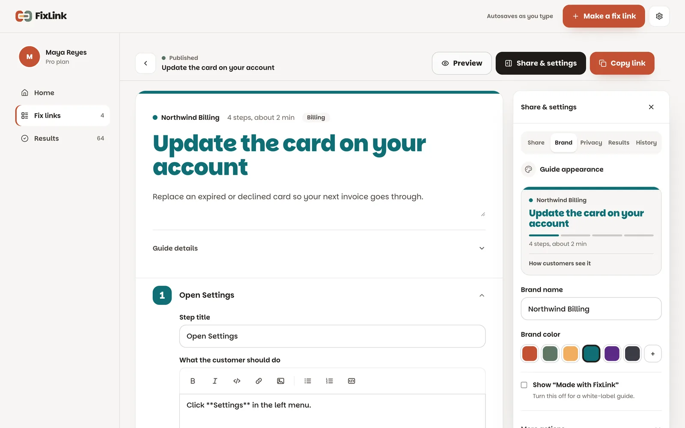
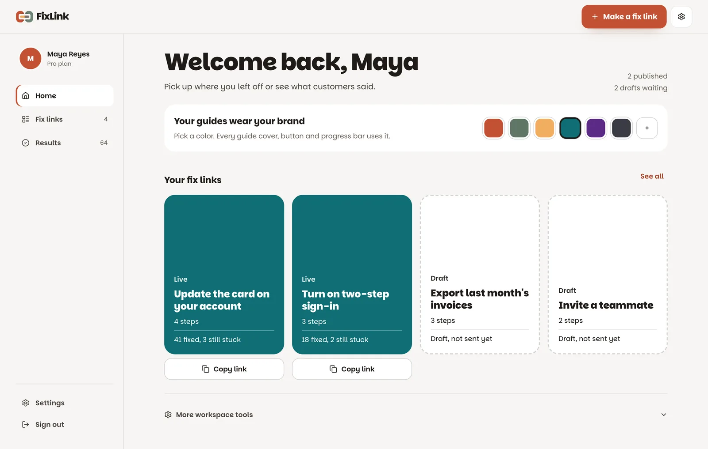

Outcome.
A support agent records a fix once and sends a link. The customer follows it step by step, and private details stay blurred.
The old recorder stopped blurring after 80 matches, so a long inbox leaked the rest. The new one has no cap, reaches into iframes and shadow DOM, and blurs a frame it can’t read as a whole.
Every step is also in the page HTML. A customer gets a swipeable guide, and an AI assistant or search crawler reads the same steps from agent.md, agent.json, llms.txt and HowTo structured data.
The problem.
Support agents answer the same “how do I…” question every week. The usual reply is a wall of text or a screenshot pasted into chat. Customers lose their place halfway through, and the agent explains it again.
Screenshots also leak emails, card numbers and API keys. Blurring them by hand is slow, so it gets skipped when the queue is long.
Help-center tools exist, but they are built for documentation teams. An agent in the middle of a ticket needs something faster: show the fix once, get a clean link, and paste it into the reply.
Watch it. Try it.
Read the transcript
This is a fix link. The customer follows it step by step, and tells you it worked.
Hi, I’m Von. Here’s FixLink. I do the fix once in my own browser, and the extension records each click as a step. Private details are blurred before anything leaves the browser: emails, card numbers, keys, even inside iframes.
In the editor, I tidy the wording and reorder steps. The guide already looks like the customer’s brand, not mine. One click publishes it. The share panel shows exactly what the customer gets. I copy a ready-made reply and paste it into the ticket. No more long text replies.
The customer gets one step at a time, with progress, on any screen. At the end, they say if it worked. Back in FixLink, I see which guides fix things, and which ones need a rewrite.
Every guide also works for AI assistants, so a customer’s own AI can follow the same steps. Try the live example at the link below.
The example guide is public. No sign-up needed. Tap “Yes, solved” or “Not yet” at the end.
How it works.
- Record. The extension’s side panel records clicks and screenshots while I do the fix on my own screen. Emails, card numbers and keys are blurred in the screenshot before it leaves the browser.
- Review. The web editor turns the capture into steps. I fix the wording, reorder steps, mark up a screenshot or redo one step. An optional AI pass tidies the writing and checks the screenshots for anything the blur missed.
- Publish. The guide gets a link under the company’s handle, in the company’s brand color, like usefixlink.com/<handle>/<guide>.
- Share. I copy the link, or a ready-made reply that includes it. Teams can also embed a guide on their site or group guides into a searchable help collection.
- Learn. At the end the customer taps “Yes, solved” or “Not yet”. The results page shows which guides work and which ones need a rewrite.





Reliability.
| If this fails | What happens |
|---|---|
| A screenshot leaks a customer’s email or card | Blur runs in every frame and inside shadow DOM, with no match cap. A frame the extension can’t read is blurred whole. The blur stays solid to the image edges. A real Chrome test found an edge leak, and I fixed it. |
| Two edits collide | Changes that depend on the current guide, like AI polish or a screenshot upload, run under a row lock and merge field by field. An edit saved in the meantime is kept. |
| A big guide fails to save | The web app and the extension share one size budget. Autosave sends only the screenshots that changed, and splits a save that would pass Vercel’s 4.5 MB request limit. |
| One company reads another’s data | Supabase row-level security is on for every app table, and the public key’s table grants are revoked. Every admin page checks the role before it loads data. |
| Someone fakes a Google identity | The Google account ID comes only from verified identities, never from profile fields a user can edit. |
How it’s tested
32 web and store tests run against a real Postgres database, including a concurrency test for two editors. 12 recorder privacy tests load the real extension in Chrome and check that every email in the capture is unreadable. Each security fix shipped with a test that fails on the old code.
Use it with your stack.
Tech and decisions.
- Blur in the browser, not on the server. Private text is hidden before the screenshot is uploaded, so FixLink never stores the raw image.
- One page for people and AI. Every step stays in the server HTML. The same guide works for a customer on a phone and for an AI assistant fetching it, with no separate copy to keep in sync.
- The customer’s brand, not FixLink’s. Guides wear the company’s color, so the customer feels they are still with the company they asked for help.
- Light pages over a full brand background. I tried a full-bleed brand color and dropped it because it was tiring to read. The color now sits on the title, progress bar and main button.
- One size budget, checked in the build. The extension and the web app read the same limits, and a check fails the build if they drift apart.